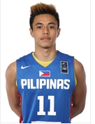
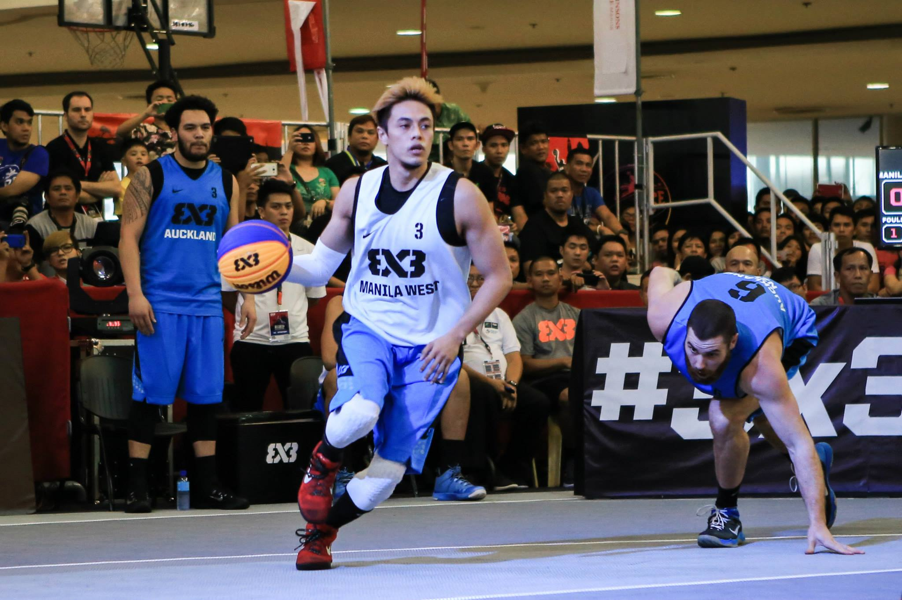
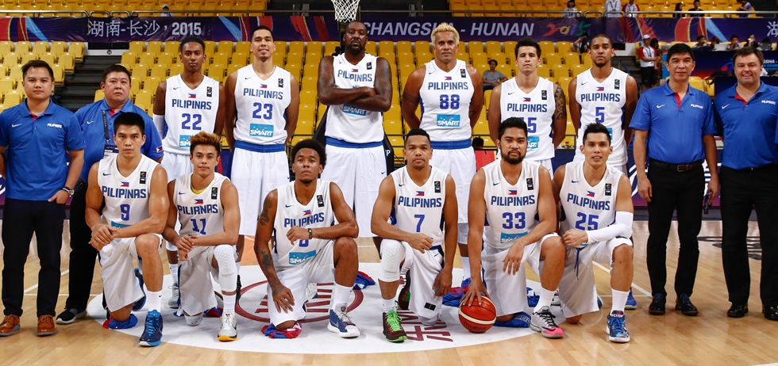

Terrence Romeo
Terrence Bill Vitanzos Romeo (born March 16, 1992) is a Filipino professional basketball player for the GlobalPort Batang Pier of the Philippine Basketball Association (PBA). He plays both the point guard and shooting guard positions. He plays both the point guard and shooting guard positions. His self-confessed moniker is The Golden Boy.
Born: March 16, 1992 (age 24), Imus
Listed height: 5 ft 11 in (1.80 m)
Listed weight: 178 lb (81 kg)
Current team: GlobalPort Batang Pier (#7 / Point guard, Shooting guard)
Parents: William Romeo
Education: Far Eastern University, Far Eastern Universit / Nicanor Reyes Educational Foundation
High School Career

He played as a point guard for the Far Eastern University before being selected fifth overall in the 2013 PBA draft by GlobalPort. He won the 2011 UAAP Rookie of the Year, was a member of the UAAP Mythical Team during his junior and senior year and was the 2014 UAAP men's basketball Most Valuable Player.
Romeo first played for the Letran Squires before he was scouted by Far Eastern University - Diliman. He played only one season as a Baby Tamaraw before graduating to the seniors division. He was famously known for scoring the UAAP Juniors basketball record of 83 points, eclipsing the previous record of 69 points held by former Junior Maroons player Paolo Mendoza. What's more impressive, is that he did it in 31 minutes of playing time, scoring 33 points in the 3rd quarter alone. He won the UAAP Juniors' Most Valuable Player (2009) that same year, with averages of 37.1ppg 4.1apg 4.0spg.
College Career

It was a bit of a rocky transition from the juniors to the seniors division for Romeo. Although he was named the top rookie, sharing the court with then UAAP MVP RR Garcia proved challenging for the younger guard, especially since he was relegated to the second option (something he wasn't used to). Romeo's shooting percentage was somewhat below par at 32 percent, scoring a mere (for his standards) 9.9 points in his rookie season.
In his final year as half of FEU’s dreaded backcourt duo, Romeo was expected to again lead the Tamaraws in scoring. He scored 30 points in three games during the course of the season, making him one of only three players since 2003 to score 30 points more than once. In UAAP Season 76, he was awarded as Most Valuable Player. He became only the third guard to win the award following Garcia and PBA legend Johnny Abarrientos. He averaged 22.2 points, 6.3 rebounds, 3.9 assists and 1.6 steals to lead the league in points and steals while finishing 3rd in assists.
PBA Career

Rookie Year
Romeo was selected by GlobalPort as their 5th overall pick, and wore the same No 7 jersey he wore in college. He explained that Robert Jaworski was his father's idol, who uses the same jersey number. In only his second game as a pro, he buried 34 points while going 6-of-8 from beyond the three-point arc en route to a win against Air21 Express.
He also had the opportunity to play against Caguioa in their first showdown against each other, scoring 27 points and leading a brave second-half comeback that almost denied Ginebra a 109-104 victory. Caguioa, who scored 29 points himself, commented that Romeo was the closest player that can be compared to him. The rookie guard later admitted that Caguioa was one of his idols growing up.
With these performances, the former king tamaraw proved to be a very capable scorer as a pro. Showing flashes of brilliance throughout the season. But he struggled with consistency, as he wasn't able to produce the same eye-popping numbers in the later conferences. Regardless, he was considered a rising star, dazzling the crowd with his dribbling skills and scoring prowess.
Sophomore Year

At the start of the season, Romeo debuted a slimmer and leaner physique. Losing a total of 25 pounds. This resulted in a much quicker and more explosive version of himself. With a more physically fit Romeo, Globalport was expected to make it deeper into the playoffs in their first conference.
Even more so, since the spitfire guard was sharing the court with talented guards; veteran leader Alex Cabagnot and top rookie Stanley Pringle they were dubbed as "three-headed monster".
The departure of Cabagnot proved beneficial to Romeo's rise to stardom, as he was able to blossom into the team's first scoring option. He led the locals in points per game in the 2015 PBA Commissioner's Cup, averaging 21.36 points. He also made an impression during the All-Star Weekend in Puerto Princesa. Scoring a whopping 50 points, albeit a losing effort, against the rookies in the rookies vs sophomores blitz game. He was also the PBA Three-Point Shootout champion (2015) and the PBA All-Star Game MVP (2015) capping off a memorable weekend for the young guard. His efforts weren't enough though, as the team struggled to get back into the win column in their remaining games after the all-star break. Losing Stanley Pringle (who was nursing an injury) was a factor in their poor finish of the conference.
After leading GlobalPort to its best finish in 2015 PBA Governors' Cup, Romeo was awarded Most Improved Player. He ended the third conference and the season as the top local scorer. With a career highlight of a 40-point game against Paul Lee's Rain or Shine Elasto Painters. He emerged as the scoring champion and also placed in the PBA Mythical Second Team(2015).
Third Season

Romeo's third season in PBA was up for a good start. He, along with backcourt mate Pringle, formed the Slash Brothers tandem (similar to Golden State Warriors' own Splash Brothers). The duo both led the team in scoring with 24.06 and 19.61 points, respectively,[15] while leading GlobalPort to its first ever Semi-Finals appearance against Alaska), only to lose the series. He registered a new career-high 41 points in Game 1, for their only win in the said series.
International Career

2014 FIBA 3x3 World Tour
Manila Master
Playing for Manila West, Romeo was teamed up with Nino Canaleta, Rey Guevarra and Aldrech Ramos, three pros with so much more experience than him. Each of those three have suited up for the national team before. But in the end, the apparent "star" of the team was 22-year-old Romeo, who had just completed his first year in the PBA.
The competition proved to be a fit for the flashy guard's one on one playing style. Drawing the loudest cheers from the crowd with his crossovers and vast array of scoring moves.
Romeo led the Manila West to be hailed champions of the 2014 FIBA 3x3 World Tour Manila Masters. They won 10,000 USD. More importantly, they qualified for the World Tour Masters in Tokyo on October 11 and 12. There, they faced the top two teams of each of the five stops of the tour.
World Tour Final

Despite making some headway during the first day of the 2014 FIBA 3x3 World Tour Final, team Manila West was not able to sustain its momentum in the knockout stage as the team fell to Slovenian squad Kranj, 21-12, in the quarterfinal round. They ended the tournament at fifth place, which is five ranks higher than its original classification ranking as a 10th seed in the pool of 12 international teams prior to the start of the tournament.
The 6"0 Romeo was listed as among the seasons top point producers going back to the qualifying legs of the 2014 FIBA 3x3 World Tour. Romeo got an aggregate of 49 points in the 8 matches that he had played in, both in the Manila Masters leg and the Final in Sendai, Japan. This placed him at 11th overall in terms of scoring output out of the 290 players that participated in that years edition of the 3x3 World Tour.
The international basketball body named the GlobalPort scorer as the number one 3x3 player outside of Europe, Americas, and Qatar, and therefore earned his team a slot in the All-Star exhibition. He is ranked number one in the Philippines.
2015 FIBA 3x3 World Tour
Manila Masters
As the face of 2015 FIBA 3x3 World Tour Manila Masters, Terrence Romeo's spectacular one-on-one skills were once again on full display, as he shone for the Manila West team in the tournament.
He was not able to lead Manila West back to the championship though, as he and Manila West lost to Manila North (composed of Calvin Abueva, Vic Manuel,Troy Rosario and Karl Dehesa) in the semi-finals, but Romeo still brought home some hardware.
He won the three-point shootout and was later named the MVP of the event after leading all scorers with 43 points in four games.
Gilas Pilipinas
Romeo was named to the Gilas Pilipinas 3.0 training pool in 2015, and joined the team for a pocket tournament in Estonia. He also saw action in the 2015 William Jones Cup, where he emerged as the crowd darling, wowing Filipino and Taiwanese Fans alike with his crafty handles and scoring ability while posting a stat-line of 15.2 points in just 18 minutes of play per game in that tournament. Following his Jones Cup breakthrough, he was a member of the Gilas final lineup that competed in the 2015 FIBA Asia Championship, and had his best game against powerhouse Iran and India.